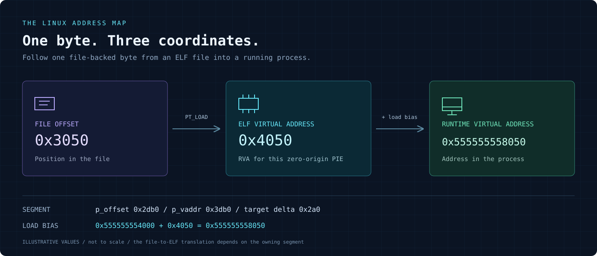

RVA (Relative Virtual Address) on Linux
Understand how a runtime address relates to an ELF executable, its load bias, and its bytes on disk. A practical guide with diagrams, one short C++ example, and detailed output explanations.

What does RVA mean on Linux?
A Relative Virtual Address describes a location as a byte offset from a chosen module origin. If a module begins at 0x555555554000 and an object is at 0x555555558050, their difference is 0x4050, or 16,464 bytes.
module-relative offset (RVA) = runtime VA − chosen image start
runtime VA = chosen image start + RVADefine your origin. ELF does not define a universal field called RVA. Linux tools may report an ELF virtual address, a file offset, a symbol offset, or a mapping-relative offset. Here, RVA means offset from the lowest page-aligned PT_LOAD runtime start. We keep that quantity separate from an ELF virtual address and from load bias.
ELF is the executable and shared-object format used in this guide. Its program headers describe loadable PT_LOAD segments. Sections such as .text, .data, and .bss serve a different view of the file; a segment can contain multiple sections. [1]
- Runtime virtual address (VA)
- An address in the running process, such as the value of
&g_marker. - ELF virtual address
- A location in the object's link-time virtual-address coordinate system, used by its program headers and ordinary defined symbols.
- Load bias
- The additive adjustment from the object's ELF virtual addresses to its runtime addresses.
- File offset
- A byte position measured from the beginning of the ELF file on disk.
These are virtual-memory coordinates, not physical RAM addresses. This article follows ordinary user-space ELF64 binaries on Linux; it does not cover kernel modules, JIT code, or device memory.
Load bias is the key ELF relationship
For an ordinary location inside a loaded ELF object:
runtime VA = load bias + ELF virtual address
ELF virtual address = runtime VA − load biasdl_iterate_phdr() exposes this adjustment as dlpi_addr. A loadable segment starts at dlpi_addr + p_vaddr. The callback also exposes that object's program headers. [2]
Let V0 be the lowest loadable p_vaddr rounded down to the system page size. Our explicit module-origin convention gives:
image start = load bias + V0
RVA = runtime VA − image start
= ELF virtual address − V0PIE: the common zero-origin case
A typical position-independent executable (PIE) has its lowest loadable ELF page at zero. For that layout, V0 = 0, so RVA and ELF virtual address have the same numeric value, and the image start equals the load bias. GCC provides -fPIE and -pie to compile and link a PIE. [3] [4]
With ASLR enabled, the runtime placement can change while offsets inside that exact binary stay unchanged. Linux's randomize_va_space documentation describes address-space randomization, including PIE placement. [5]
Non-PIE: why subtracting “the base” can be ambiguous
Consider a conventional x86-64 non-PIE ET_EXEC with first loadable page at 0x400000 and load bias zero. For an object at runtime VA 0x404050:
load bias = 0x0
V0 = 0x400000
image start = 0x400000
ELF virtual addr = 0x404050 − 0x0 = 0x404050
RVA (this guide) = 0x404050 − 0x400000 = 0x4050The two offsets that happened to match in the zero-origin PIE case now differ. This is why a symbolizer's expected address convention matters. 0x400000 is a chosen conventional example, not a guaranteed address for every ELF.
Offsets are stable only for the same binary layout. Rebuilding or changing compiler/linker settings can move code and data. Record the exact executable or shared library and its build identity along with an address.
When are relative addresses useful?
- Crash analysis: store the owning module and a well-defined relative address, rather than a bare VA that depends on placement.
- Performance profiling: normalize sampled instruction pointers using the module layout from the captured process, then look up symbols in the matching ELF.
- Debuggers and disassemblers: relate a live process location to the address shown in the ELF's disassembly.
- Binary inspection: convert a location to a file offset before reading its original bytes.
Always name the module: offset 0x4050 in an executable identifies something different from the same offset in a shared library. Heap allocations and stack variables do not become ELF-module locations just because you subtract an executable's start address.
ELF addresses are not file offsets
The loadable segment's p_vaddr gives its ELF virtual-address origin; p_offset gives its file origin. p_filesz counts its file bytes and p_memsz counts its memory bytes. A memory tail beyond the file bytes starts zero-filled. [6]
For a file-backed byte in a particular PT_LOAD:
ELF VA = runtime VA − load bias
segment delta = ELF VA − p_vaddr
file offset = p_offset + segment delta
Required: 0 ≤ segment delta < p_memsz
For a file byte: segment delta < p_fileszUse this invented segment throughout the calculations below. It is not a dump of a compiled executable:
p_vaddr = 0x3db0 p_offset = 0x2db0
p_filesz = 0x02b0 p_memsz = 0x12b0
File-backed ELF VA range: [0x3db0, 0x4060)
Zero-filled ELF VA range: [0x4060, 0x5060)
File byte range: [0x2db0, 0x3060)All ranges are half-open. The starts are included, and the ends are excluded. The chosen p_vaddr and p_offset are congruent modulo the assumed 4 KiB alignment: both end in 0xdb0.
Worked conversion: ELF VA 0x4050
- Start with a runtime address:
0x555555558050. - Remove the load bias:
0x555555558050 − 0x555555554000 = 0x4050. - Find the segment offset:
0x4050 − 0x3db0 = 0x2a0. - Check file backing:
0x2a0 < 0x2b0, so the target is within the segment's file bytes. - Add the disk start:
0x2db0 + 0x2a0 = 0x3050.
Zero-filled memory: ELF VA 0x4500
The segment delta is 0x4500 − 0x3db0 = 0x750. It is less than p_memsz (0x12b0), but greater than or equal to p_filesz (0x2b0). It lies in memory but has no original file byte. This is the mechanism behind the zero-initialized tail commonly associated with .bss. The program may later modify those bytes.
The in-memory value of a file-backed location can also differ from its original bytes because of relocations or program writes. A file offset identifies the file representation, not necessarily the current contents of process memory.
A simple Linux C++ example
The code only does three things: finds the module containing a global variable, subtracts the module start from the variable's address, and adds it back to check the result.
This example targets a normal dynamically linked Linux/glibc PIE executable with a zero-origin load layout, as described above. dladdr() finds the object containing an address and returns its load base in dli_fbase. [10]
#include <dlfcn.h>
#include <cstdint>
#include <iostream>
int g_marker = 42;
int main() {
Dl_info module{};
if (dladdr(&g_marker, &module) == 0) {
std::cerr << "Could not find the module.\n";
return 1;
}
auto base = reinterpret_cast<std::uintptr_t>(module.dli_fbase);
auto address = reinterpret_cast<std::uintptr_t>(&g_marker);
auto rva = address - base;
std::cout << std::hex << std::showbase;
std::cout << "Module start: " << base << '\n';
std::cout << "Variable VA: " << address << '\n';
std::cout << "RVA: " << rva << '\n';
std::cout << "Rebuilt VA: " << base + rva << '\n';
std::cout << std::dec << "Value: " << g_marker << '\n';
}
What each part does
g_marker = 42: creates a global variable that belongs to this executable.dladdr(&g_marker, &module): asks Linux's dynamic loader which object contains that variable. Theifhandles failure.baseandaddress: store the module start and the variable's runtime VA as integers.std::uintptr_tis an integer type large enough to hold a pointer on this target;reinterpret_castperforms the conversion.rva = address - base: is the main calculation. It measures the variable's distance from the module start.base + rva: rebuilds the original address.std::hex,std::showbase, andstd::dec: print addresses in hexadecimal with an0xprefix, then print the variable's value in decimal.
Compile and run on Linux
g++ -std=c++17 -D_GNU_SOURCE -g -O0 -fPIE -pie rva-simple.cpp -o rva-linux -ldl
./rva-linux-fPIE -pie selects a position-independent executable. -ldl links the dynamic-loader API, and -D_GNU_SOURCE makes its GNU declarations available. The program assumes the usual zero-origin PIE layout; it does not inspect every ELF segment.
Example output
Illustrative output, not a captured Linux execution. Your base address and variable offset may differ. The Linux-specific example has not been executed on the authoring host.
Module start: 0x555555554000
Variable VA: 0x555555558050
RVA: 0x4050
Rebuilt VA: 0x555555558050
Value: 42
Understand the output
- Module start:
0x555555554000is the example load origin returned for the executable. - Variable VA:
0x555555558050is the example address ofg_marker. - RVA: subtract the two addresses:
The variable is0x555555558050 - 0x555555554000 = 0x40500x4050bytes (16,464 bytes) from the module start. - Rebuilt VA: adding the RVA back gives the same address:
0x555555554000 + 0x4050 = 0x555555558050 - Value:
42is the variable's stored integer, not an address.
Run the same binary again. ASLR may move its module start and variable VA together, while the RVA stays the same. Rebuilding the program can change the RVA.
Keep the two tasks separate. This short program demonstrates module-relative addressing. To locate bytes on disk, use the PT_LOAD calculation in the earlier worked example. A module-relative offset is not automatically a file offset.
Connect the addresses to Linux tools
Inspect the ELF layout with readelf
readelf -hW ./rva-linux
readelf -lW ./rva-linux
readelf -sW ./rva-linux
readelf -nW ./rva-linux-h shows the ELF header, -l the program headers, -s the symbols, and -n notes such as a build ID when one is present. -W requests wide output. Use the LOAD row containing your ELF VA when translating to a file offset. [7]
Read mapping addresses carefully
/proc/PID/maps lists mapping address ranges, permissions, file offsets, and paths for a live process. The offset column is a file offset. One object can have several mappings with different permissions. [8]
# Illustrative excerpt, not captured from the program:
555555554000-555555555000 r--p 00000000 ... /path/app
555555555000-555555556000 r-xp 00001000 ... /path/appIn this zero-origin PIE example, subtracting the r-xp start as though it were the image start makes the result too small by 0x1000. Derive the bias by matching a mapping to its PT_LOAD metadata, or use the loader's bias directly. For nonzero-origin objects, the beginning of a mapping is not itself the bias.
To inspect a process, replace PID with its live process ID in /proc/PID/maps. The small example exits immediately, so use a debugger to pause it or inspect another running target.
Give addr2line the ELF coordinate it expects
For a normal executable lookup, use the link-time ELF virtual address of an instruction with the matching ELF and debug information. For a zero-origin PIE, the module-relative value happens to match it. For the non-PIE example, an instruction at VA 0x401234 needs ELF VA 0x401234, not RVA 0x1234. [9]
# Obtain main's ELF symbol address from the exact binary:
main_elf_va=$(nm -n ./rva-linux | awk '$3 == "main" {print "0x" $1; exit}')
addr2line -e ./rva-linux -f -C "$main_elf_va"-e selects the executable, -f includes function names, and -C demangles C++ names. Your source line depends on the compiled file; missing debug information can produce ??:0. Use an instruction address for a source-line lookup, rather than the data address of g_marker.
Common mistakes to avoid
- Calling every relative number an RVA. Always state the origin: load bias, image start, mapping start, section start, or symbol start.
- Subtracting the first executable mapping. It may be only the code segment, not the object's start.
- Using an RVA as a file offset. Translate through the owning
PT_LOADand check its file-backed extent. - Assuming a relative address fits in 32 bits. ELF64 address calculations need suitable 64-bit or pointer-sized types.
- Mixing binaries or modules. Rebuilding or loading another library invalidates assumptions about the layout.
- Confusing image-relative and instruction-relative addressing. x86-64 RIP-relative displacement has an instruction-defined origin; it is not the module-relative convention used here.
- Applying simple symbol arithmetic to TLS or special symbols. Thread-local storage, indirect functions, and interposed symbols require their own ABI and loader semantics.
- Treating this example as an ELF parser. The short program uses the dynamic loader to find a module; it does not parse ELF files. A parser for arbitrary files must check class, byte order, structure lengths, integer overflow, overlaps, and the entire requested file range.
The runtime example reads only a known global in its own executable. Address arithmetic alone does not establish memory permissions or object lifetime.
A practical workflow
- Identify the owning object and exact binary build.
- Determine whether your input is a runtime VA, an ELF VA, a file offset, or an offset with another origin.
- For runtime normalization, obtain the object's load bias and subtract it to recover an ELF VA.
- For a module-relative record, explicitly store which image-start convention you used.
- For file bytes, locate the containing
PT_LOAD, confirm the target is withinp_filesz, and translate to a file offset. - Use the correct address coordinate with the debugger, profiler, or symbolizer.
Runtime VA = load bias + ELF VA
RVA = ELF VA − lowest page-aligned PT_LOAD ELF VA
File byte = p_offset + (ELF VA − p_vaddr), if file-backedReferences
- Linux man-pages: elf(5) — ELF headers, types, sections, and symbols.
- Linux man-pages: dl_iterate_phdr(3) — loaded objects, load adjustment, and segment addresses.
- GCC: code generation options — position-independent executable code.
- GCC: link options — PIE and non-PIE linking.
- Linux kernel: randomize_va_space — ASLR configuration semantics.
- System V gABI: program loading — loadable segments, file bytes, zero-filled memory, and the ELF base-address definition. That ABI base-address adjustment is distinct from this article's chosen image-start origin.
- GNU Binutils: readelf — inspecting ELF metadata.
- Linux man-pages: proc_pid_maps(5) — process mappings and file offsets.
- GNU Binutils: addr2line — translating addresses to source locations.
- Linux man-pages: dladdr(3) - finding the loaded object and module start for an address.
Diagrams and numeric layouts are original teaching examples. The short Linux example's output is illustrative; it has not been executed on a Linux host during preparation of this page.